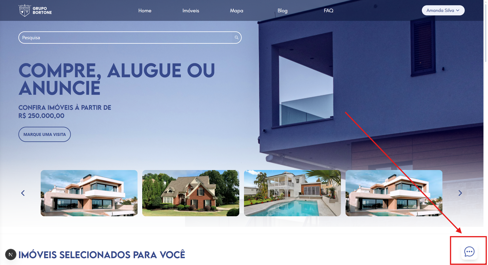
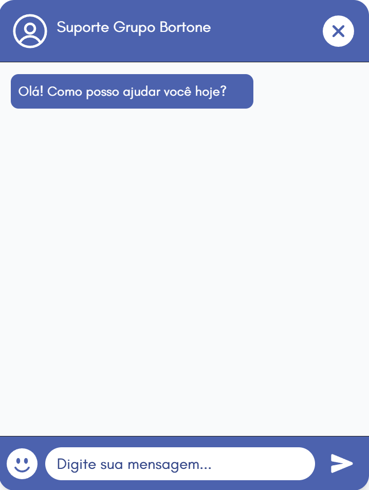

Chat Suporte
Descrição do Chat
Esta seção é responsável pelo canal de comunicação em tempo real entre o cliente e a equipe de atendimento.
Objetivo do Chat
- O cliente pode sanar dúvidas ou resolver problemas rapidamente.
- Melhorar a experiência do cliente, dando mais confiança e satisfação ao ter alguém disponível para ajudar.
Como Executar o Servidor
Backend:
-
Acesse a Pasta do Backend
cd back-end -
Instale as Dependências
npm install -
Rode o Servidor
npm run dev
Frontend:
-
Acesse a pasta do Frontend
cd frontend -
Instale as Dependências
npm install -
Rode o Front
npm run dev
Eventos WebSocket
Mensagem
ws.on("message", ...)
Fechamento
ws.on("close", ...)
Funcionalidades do Chat
- O Chat conta com histórico salvo para as últimas 100 mensagens enviadas após finalizar a sessão.
- Possui filtro de mensagens inadequadas.
- Limita o número de caracteres inseridos a 500.
- Possui filtro de caracteres especiais.
Uso do Frontend
Acesse o Projeto e clique no botão do Chat:

Pronto! Agora é só informar a sua dúvida ao atendente
